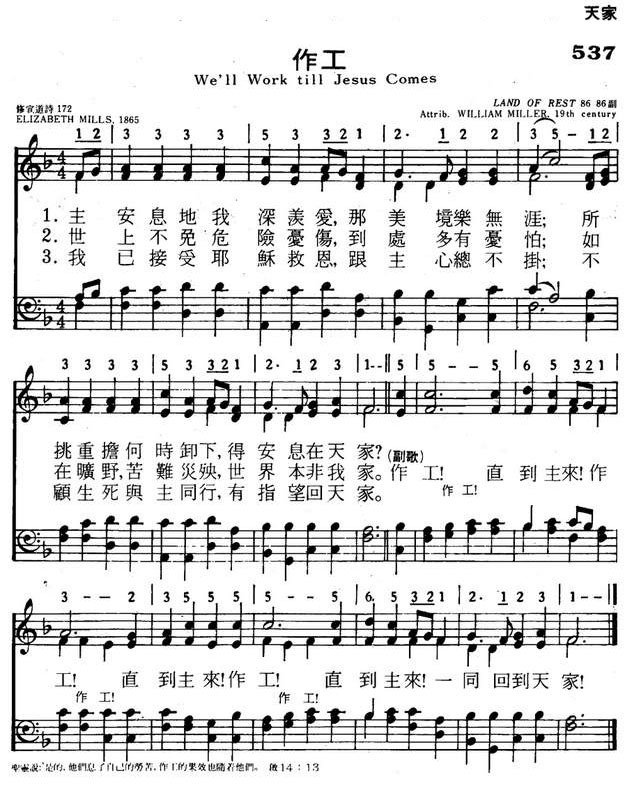

|
|
|
|
1 O land of rest, for thee I sigh! Chorus: 2 To Jesus Christ I fled for rest; |
537作工
1.主安息地我深羡爱，那美境乐无涯，
所挑重担何时卸下，得安息在天家。 作工！直到主来！作工！直到主来！ 作工！直到主来！一同回到天家。 2.世上不免危险忧伤，到处多有忧怕， 如在旷野，苦难灾殃，世界本非我家。 作工！直到主来！作工！直到主来！ 作工！直到主来！一同回到天家。 3.我已接受耶稣救恩，跟主心总不挂， 不顾生死与主同行，有指望回天家。 作工！直到主来！作工！直到主来！ 作工！直到主来！一同回到天家。 |
|
https://www.mred365.cn/szxg/7540.html
 https://hymnary.org/page/fetch/HHOF1980/493/low
|
|
|
|
|

-

https://youtu.be/4nvUxsXVn84 -
https://youtu.be/fuCQh3Wv2GI
| Text: | We'll Work Till Jesus Comes |
| Author: | Elizabeth Mills |
| Tune: | [O land of rest, to thee I sigh] |
| Composer: | William Miller |
| Short Name: | Elizabeth Mills |
| Full Name: | Mills, Elizabeth, 1805-1829 |
| Birth Year: | 1805 |
| Death Year: | 1829 |
Mills, Elizabeth, née King, daughter of Philip King, was born at Stoke Newington in 1805; married to Thomas Mills, M.P., and died at Finsbury Place, London, April 21, 1829. Her popular hymn:—
We speak of the realms of the blest. [Heaven] is thus annotated in Miller's Singers and Songs, &c, 1869, p. 483: "We are much indebted to John Remington Mills, Esq., M.P. for information about this hymn, written by his accomplished relative. The original has 6 st. and was composed after reading ‘Bridges on the 119th Psalm' (on ver. 44, p. 116), ‘We speak of heaven, but oh! to be there.' . . . Already deservedly a favourite, new interest will be added to this hymn when we know that the authoress was early called to ‘the realms of the blest,' of which she sang so sweetly, and that she wrote this hymn a few weeks before her death." The text of this hymn is usually given in an imperfect form. The corrections are supplied by W. F. Stevenson in his Hymns for Church and Home, 1873, "Children's Hymns," No. 151, and the note thereon. Few children's hymns have been received with more favour. It is found in almost every hymn-book published for Children in Great Britain and America during the last fifty years. In some collections it begins, "We sing of the land of the blest"; and in others,"We talk of the land of the blest,"
--John Julian, Dictionary of Hymnology (1907)
Notes
Published in 1837 in
Wakefield's The Christian Harp
===============================
Sweet land of rest, for thee I sigh. [Heaven
desired .] The earliest date to which we have traced
this hymn is the American Songs for the Sanctuary,
1865, where it is "Anon" In Hatfield's Church Hymn Book,
1872, it is given as by "G.M.—1829," but in several later collections
the name of "Elizabeth Mills” is freely used. Beyond these ascriptions
we have no evidence in favour of either. Sometimes the hymn begins "O
land of rest," as in Sankey's Sacred Songs & Solos,
1881.
--John Julian, Dictionary of Hymnology, New Supplement (1907)
Tune Information
| Title: | [O Land of rest, for thee I sigh] (Miller) |
| Composer: | William Miller |
| Meter: | 8.6.8.6 |
| Incipit: | 12333 35332 12122 |
| Key: | F Major |
| Copyright: | Public Domain |
| Short Name: | William Miller |
| Full Name: | Miller, William |
| Birth Year: | 1801 |
| Death Year: | 1878 |
"WE’LL WORK TILL JESUS COMES"
"…A doer of the work…" (Jas. 1.25)
INTRO.:
A song which encourages us to be doers of the work is "We’ll Work Till Jesus Comes" (#396 in Hymns for Worship Revised, and #115 in Sacred Selections for the Church). Sometimes dated 1829, the the text was written by an unknown author. In many books the song appears as "Anonymous." Some authorities believe that it is from the American folk tradition. In other books, it is attributed to Mrs. Elizabeth King Mills, who was born at Stoke Newington in Middlesex, England, in 1805. The daughter of Philip King, she married Thomas Mills, who was a Member of Parliament. No other information about her is available, except that she was a poet who produced what was once a well known hymn, "We Speak of the Realms of the Blest." There is insufficient evidence either to credit or to discredit her authorship of the hymn beginning, "O land of rest, for thee I sigh." Mrs. King died at Finsbury Place in Middlesex, near London, England, on Apr. 21, 1829.
John Julian in his Dictionary of Hymnology traces the text to Songs for the Sanctuary, published in 1865, where it begins "Sweet land of rest." However, Forrest M. McCann in Hymns and History says that it appears in his copy of Revival Hymns, a camp meeting collection published around 1857. And Praise for the Lord cites its first appearance as being in the 1836 Christian Harp published by Samuel Wakefield (1799-1895). The chorus was not part of the original text and first appeared in the 1858 Primitive Hymns published by Benjamin Lloyd (1804-1860). The tune (Land of Rest) is attributed to William Miller. No information has been found to identify him for sure, except that he was a nineteenth century musician.
In the Seventh-Day Adventist Hymnal of 1940, the song is found among the "Early Adventist Hymns." This had led to the theory that the composer might have been the founder of the Adventist movement who predicted the second coming of Christ in the 1840’s, William Miller (1782-1849). However, there is no proof of this, and other books identify the composer as a different William Miller (1801-1878). The melody first appeared in the 1859 Devotional Melodies published by A. S. Jenks. The arrangement with which we are familiar was made in 1876 by William James Kirkpatrick (1838-1921). The change of the first line to "O land of rest" was made at least as early as Ira D. Sankey’s 1881 Sacred Songs and Solos.
Among hymnbooks published by members of the Lord’s church during the twentieth century for use in churches of Christ, the song appeared in the 1921 Great Songs of the Church (No. 1) and the 1937 Great Songs of the Church No. 2 both edited by E. L. Jorgenson; the 1924 International Melodies edited by Earnest C. Love (with both the Miller melody and another tune of unknown origin); the 1935 Christian Hymns (No. 1), the 1948 Christian Hymns No. 2, and the 1966 Christian Hymns No. 3 all edited by L. O. Sanderson; the 1963 Abiding Hymns edited by Robert C. Welch; and the 1963 Christian Hymnal edited by J. Nelson Slater. Today it may be found in the 1971 Songs of the Church, the 1990 Songs of the Church 21st C. Ed., and the 1994 Songs of Faith and Praise all edited by Alton H. Howard; the 1978/1983 (Church) Gospel Songs and Hymns edited by V. E. Howard; and the 1992 Praise for the Lord edited by John P. Wiegand; in addition to Hymns for Worship, Sacred Selections, and the 2007 Sacred Songs of the Church edited by William D. Jeffcoat.
The hymn discusses several aspects of eternal life which should motivate us to work for the Lord.
I. In stanza 1 we are told that heaven is a land of rest for which we sigh
"O land of rest, for thee I sigh; When will the moment come,
When I shall lay my armor by, And dwell in peace at home?"
A. We are promised that if we die in the Lord we shall rest from our labors:
Rev. 14.13
B. Therefore, like the martyred saints waiting for the Lord’s judgment upon
their persecutors, we sigh and ask how long will it be until the moment comes:
Rev. 6.9-10
C. Our hope is that we shall lay our armor by and enter that rest where we
shall dwell in peace at home: Heb. 4.11
II. In stanza 2 we are told that in contrast this earth is not our home
"No tranquil joys on earth I know, No peaceful, sheltering dome.
This world’s a wilderness I know; This world is not my home."
A. While there are many joys on earth, we are not guaranteed that we shall
always enjoy them because man’s days are few and full of trouble: Job 14.1
B. Thus, spiritually speaking, this world is like a wilderness, a dry and
thirsty land: Ps. 63.1
C. This world is not our home because our citizenship is in heaven: Phil. 3.20
III. In stanza 3 we are told that, therefore, we must flee to Jesus Christ for
our rest
"To Jesus Christ I fled for rest; He bade me cease to roam,
And lean for succor on His breast, Till He conduct me home."
A. As we journey through this uneven life, only Jesus Christ can give us true
rest: Matt. 11.28-30
B. Therefore, we should cease to roam and lean for succor on His breast that we
might find God’s comfort: 2 Cor. 1.3-4
C. By doing this, He will conduct us home because He is the way, truth, and
life that enable us ultimately to come to the Father: Jn. 14.6
IV. In stanza 4 we are told that Christ will help us through death
"I sought at once my Savior’s side; No more my steps shall roam.
With Him I’ll brave death’s chilling tide, And reach my heavenly home."
A. We seek the Savior’s side by following the example that He left us: 1 Pet.
2.21
B. He came that He might deliver us from the fear of death: Heb. 2.14-15
C. Therefore, it is through Him that we have the hope of a heavenly home: 1
Pet. 1.3-5
V. In stanza 5 we are told that finally our tears shall be wiped away
"Our tears shall all be wiped away, When we have ceased to roam;
And we shall hear our Father say, ‘Come, dwell with Me at home.’"
A. When Jesus takes us to that heavenly home, God will wipe the tears from our
eyes: Rev. 21.4
B. "When we have ceased to roam" refers to the time of death and judgment: Heb.
9.27
C. Then, if we have been faithful, we shall hear the Lord say, "Well done–enter
in": Matt. 25.21
CONCL.:
The chorus relates these blessings to the importance of serving the Lord
here.
"We’ll work till Jesus come, We’ll work till Jesus comes,
We’ll work till Jesus comes, And we’ll be gathered home."
Two other stanzas found in International
Melodies are:
"When by afflictions sharply tried, I view the open tomb,
Although I dread death’s chilling tide, Yet still I long for home."
"Weary of toil and wandering round This vale of sin and gloom,
I long to quit th’unhallowed ground And dwell with Christ at home."
The Bible often emphasizes the need to work for the Lord. However, this work is
done in hope of receiving a reward (Jer. 31.116, Jn. 4.35). Jesus
illustrated this principle in the parable of the pounds or minas, in which the
servants were to work until the master came (Lk. 19.13). Therefore, our
attitude in life as we prepare for heaven should be, "We’ll Work Till Jesus
Comes."
Words: Elizabeth King Mills (b. _____, 1805; d. Apr. 21,
1829)
Music: William Miller (no data available)
Links:
Wordwise Hymns (none)
The Cyber
Hymnal
Hymnary.org
Note: Elizabeth King Mills was the wife of a British member of parliament. The fact that she died at the age of twenty-four suggests that she may have been a relatively new bride. She gave us several hymns, including the present one in which she sighs for her heavenly home. A publication of the hymn a few years after Mrs. Mills’s death, includes several darker stanzas that seem to show her extremes of suffering.
No tranquil joys on earth I know,
No peaceful shelt’ring dome;
This world’s a wilderness of woe–
This world is not my home.When by affliction sharply tried,
I view the gaping tomb;
Although I dread death’s chilling tide,
Yet still I sigh for home.
The dictionary defines work as: “exertion or effort directed to produce or accomplish something.” And work is a fact of life. Whether it’s ploughing a field, baking bread, programing a computer, or performing surgery, we all do work of some kind.
It’s not surprising that we have many sayings that relate to the subject. “Make hay while the sun shines,” we say. And, “All work and no play make Jack a dull boy”–that one comes from more than three centuries ago. “Another day another dollar” seems to have been adapted from a saying by sailors in the nineteenth century: “More days, more dollars.” Then, there are sterner admonitions, such as: “Never put off till tomorrow what you can do today.” Or, “no pain, no gain.”
Notice the two components of the definition given earlier There is effort, and there is a goal. And perhaps, in addition, there is an implied point where our labours are expected to end with the achievement of the goal.
As to the effort involved, we try to measure the efficiency of it. Is time and effort well spent with relation to the proposed result? Or are resources being squandered? And when it comes to the goal, we have certain expectations that will measure success and productivity, as we look back on what has been done.
In the Bible, much is said about work, especially in the book of Proverbs. “He who is slothful in his work is a brother to him who is a great destroyer” (18:9). “Do you see a man who excels in his work? He will stand before kings” (22:29). Or this about priorities: “Prepare your outside work, make it fit for yourself in the field; and afterward build your house” (24:27). And about Solomon’s ideal woman: “Give her of the fruit of her hands, and let her own works praise her in the gates” (31:31).
In the New Testament, the focus on works is intensified. Our Christian faith is to be far more than an intellectual exercise. “Faith without works is dead” (Jas. 2:20; cf. Tit. 1:16). If our trust in God is genuine, it will be reflected in our life and service for Him. We will be “zealous for good works” (Tit. 2:14), also encouraging such conduct in others. “Let us consider one another in order to stir up love and good works” (Heb. 10:24).
One responsibility believers have is the work of edifying, or building up, the church (Eph. 4:11-12). Witnessing for Christ and sharing the gospel (evangelism) is another central task given to us (II Tim. 4:5). “We then, as workers together with Him also plead with you not to receive the grace of God in vain” (II Cor. 6:1). “We therefore ought to receive such [servants of Christ], that we may become fellow workers for the truth” (III Jn. 1:8). This is what is called “fellowship in the gospel” (Phil. 1:5).
We are equipped for this dual ministry (edification and evangelism) by the teaching of the Word (II Tim. 2:15; 3:16-17). And the Lord exhorts us to keep at it, with the assurance that it is not futile. “Be steadfast, immovable, always abounding in the work of the Lord, knowing that your labour is not in vain in the Lord” (I Cor. 15:58). In the end, may our testimony be, as it was for the Lord Jesus, “I have glorified You on the earth. I have finished the work which You have given Me to do” (Jn. 17:4; cf. 9:4).
Among Mrs. Mills’s hymns is this simply one that challenges us to keep serving the Lord, with heaven in view.
CH-1) O land of rest, for thee I sigh!
When will the moment come
When I shall lay my armour by
And dwell in peace at home?
We’ll work till Jesus comes,
We’ll work till Jesus comes,
We’ll work till Jesus comes,
And we’ll be gathered home.
3) I sought at once my Saviour’s side;
No more my steps shall roam.
With Him I’ll brave death’s chilling tide
And reach my heav’nly home.
Questions:
1) Are you, or is someone you know, suffering in the way Mrs. Mills
seems to have done?
2) What has been a comfort and help in this time? (Or what can you share with the other sufferer to be of help?)
Links:
Wordwise Hymns (none)
The Cyber
Hymnal
Hymnary.org
https://wordwisehymns.com/2016/11/28/well-work-till-jesus-comes/